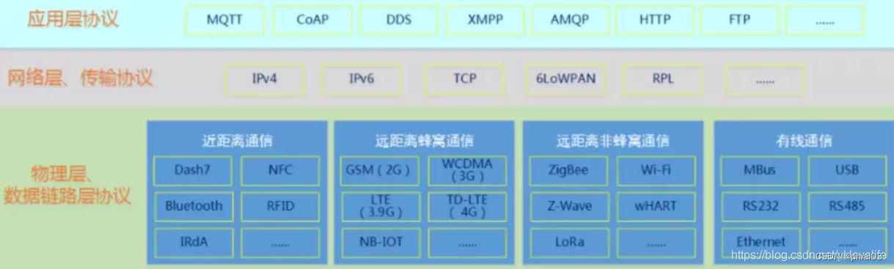

智慧水务漫谈（三）
谈谈智慧水务的数据传输与物联网通信协议。
智慧水务的监测系统构建完成以后，相当于完成了物联网体系的“感知层”，上面是传输层和平台层。
关于物联网的通信协议，这篇文章讲得比较清楚。
按网络四层协议分类，NB-IoT，LORA，WIFI，蓝牙，zigbee，4G，这几个都需要芯片模组支持（硬件支持），都属于物理层协议。而MQTT，COAP，HTTP，这些需要开发服务器，或者对接云平台厂商（软件支持），属于应用层协议。
按是否需要网关来分类，NB-IoT，4G（芯片可以直接连上移动，联通，电信运营商）属于直连，LORA，WIFI，zigbee（不能直接连上电信运营商，需要通过一个网关中转才能连上电信运营商）属于网关代理。蓝牙比较特别，是两个蓝牙设备之间互联
NB-IoT 低功耗，传输小数据，传输速度底，芯片模组和套餐便宜；4G 传输速度快和可以传输大的数据，但是功耗高，价格贵；
wifi 功耗高，传输数据快，一个路由只能加入较少设备；zigbee 功耗低，传输数据慢，可以中继，一个zigbee网关可以加入成千上万的zigbee设备。
网络层传输协议包括TCP和UDP。TCP是一种面向连接、可靠的、基于字节流的传输层通信协议。UDP是用户数据报协议，支持一个无连接的传输协议，UDP更适合对功率小、可靠性要求不高的场合
应用层协议常用有MQTT和CoAP协议。mqtt 消息队里遥感勘测传输（MQ Telemetry Transport，简称MQTT）是一个基于TCP协议、发布/订阅模式的应用层传输协议。MQTT协议是轻量、简单、开放和易于实现的，这些特点使它适用范围非常广泛。CoAP 是一个基于 REST 模型的网络传输协议。主要用于轻量级 M2M 通信。由于物联网中的很多设备都是资源受限型的，即只有少量的内存空间和有限的计算能力，所以传统的 HTTP 协议应用在物联网上就显得过于庞大而不适用，CoAP 应运而生。就用户可见性而言，CoAP 模拟了 HTTP 协议，并从这个角度来看，读数传感器数据本质上是像做一个 HTTP 请求。
